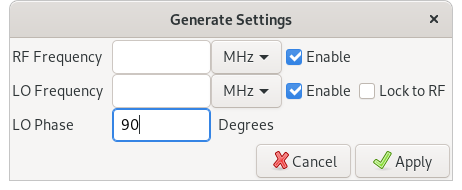
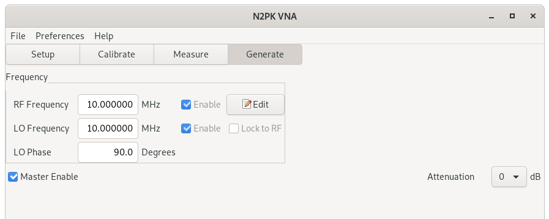
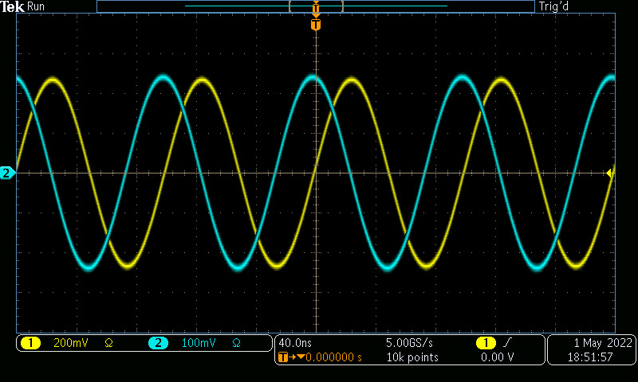
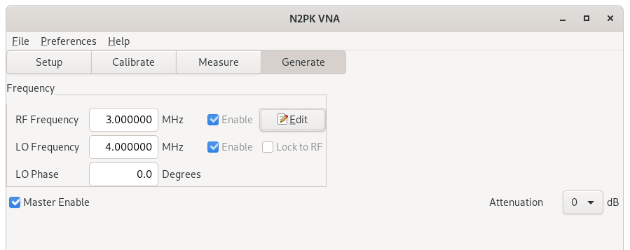
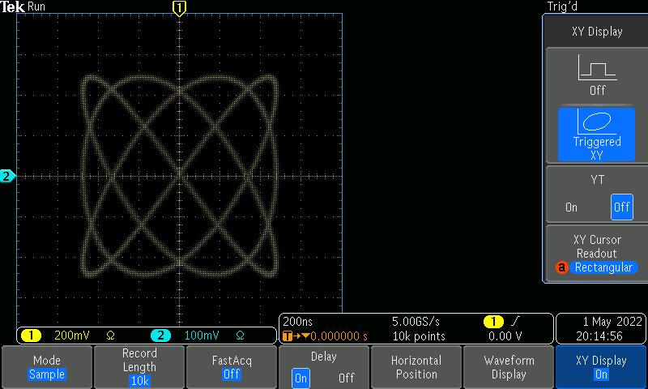
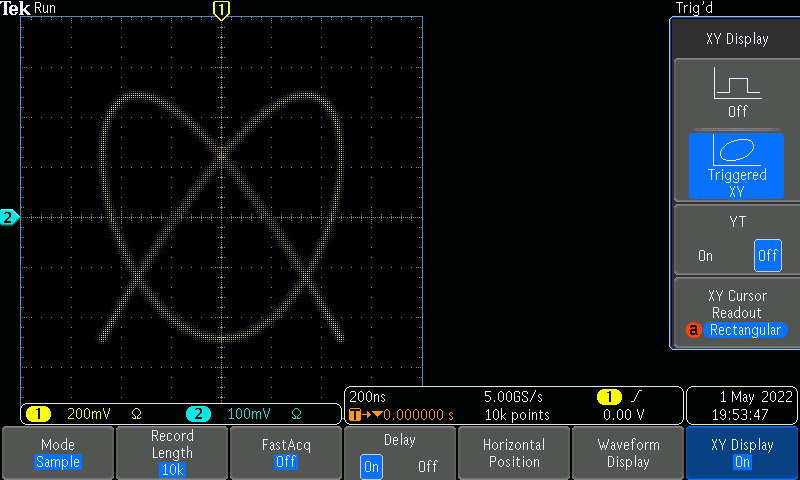

Contents
Under the Generate tab, we can use the N2PK VNA as a signal generator.
Click
The fields on the main screen are not editable directly. Click the

For example, here we change the phase to 90 degress and click

Back on the main screen, we can see that frequencies are unchanged but phase is now 90°.

Oscilloscope channel 1 is RF Out and channel 2 is LO-DDS-1 out. We can see that LO-DDS-1 leads in phase by 90°.
Two details: First, notice that the amplitude on RF out is about twice that of LO-DDS-1. Second, it's not shown here, but if we use the LO-DDS-2 output instead of LO-DDS-1, we'll see that the two LO-DDS outputs are 180° out of phase with respect to LO-DDS-1. Both are explained if you look at the N2PK VNA schematic. The DDS chips have complementary outputs. For the LO-DDS, each is routed to a separate external output; for the RF-DDS, however, the two outputs are combined through a transformer.
To generate two different frequencies, press

When we change the frequencies or phase, the N2PK VNA synchronizes the DDS's so that they start up with a consistent phase relationship. Even when we're generating two different frequencies, the phase relationship can be meaningful, especially if the two frequencies are related by small integer ratios. In this example, we generate 3 MHz on RF out and 4 MHz on LO-DDS-1. If we start out with a 90 degree phase difference and display on the oscilloscope in X-Y mode, we get this:

But if we change the phase to 0, we get a pretzel:
